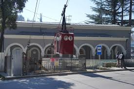
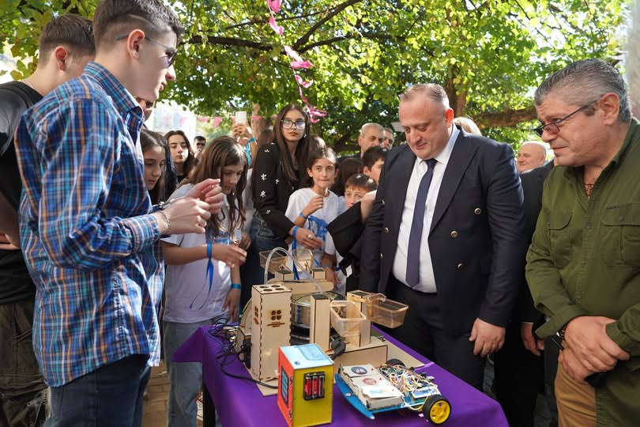
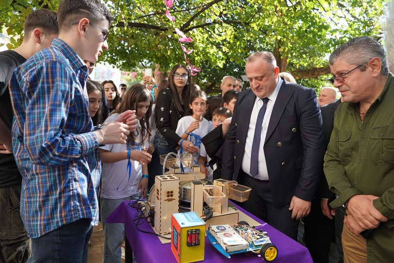
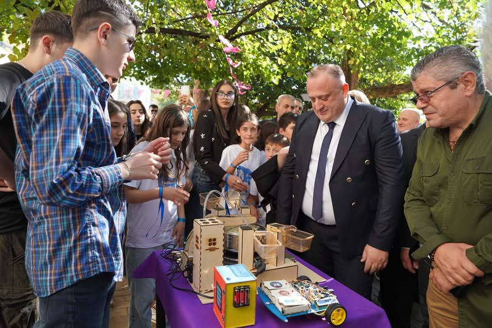

დღეს ჭიათურის თეატრს 130 წელი შეუსრულდა.
1894 წლის 11 დეკემბერს, მარგანეცის წარმოებით განთქმულ ჭიათურაში თეატრი დაარსდა.
თეატრს 1910 წლიდან მუდმივმოქმედი დასი ჰყავს და საუკენეზე მეტია, ქართული კულტურის განვითრებაში ღირსეული წვლილი შეაქვს.
130 წლის განმავლობაში თეატრის სცენაზე არაერთი სპექტაკლი დაიდგა წარმატებით.
მის სათავეებთან იდგნენ გამორჩეული რეჟისორები, ხოლო თეატრში მოღვაწეობდნენ მსახიობები,
რომლებმაც ქართულ თეატრსა და კინოში არაერთი დასამახსოვრებელი როლი განასახიერა.
ჩემთვის განსაკუთრებით საამაყოა, რომ თეატრი დღესაც ღირსეულად აგრძელებს სახელოვან ტრადიციას და კვლავაც წარმატებული სპექტაკლებით და პრემიერებით ხვდება იუბილეს.
ვულოცავ ჩვენი სახელოვანი თეატრის კოლექტივს, ვინც თავიანთი მაღალი პროფესიონალიზმით, ენთუზიაზმით და სიყვარულით დღევანდელი დღე მოიტანა. ვუსურვებ სახელოვანი ტრადიციის კვლავაც ღირსეულად გაგრძელებას .ვულოცავ მაყურებელს და ყველას, ვისთვისაც ჩვენი ქალაქის საგანძური ძალზე ძვირფასია . აქვე, პატივს მივაგებ ყველა იმ ადამიანის ხსოვნას, ვისაც წვლილი მიუძღვის ჩვენი თეატრის წინსვლასა და აღორძინებაში.
საიუბილეო თარიღთან დაკავშირებით, მივიღეთ გადაწყვეტილება, - 2025 წელი ჭიათურაში თეატრის წლად გამოცხადდეს და შესაბამისად აღინიშნოს სხვადასხვა ღონისძიებებით.
22.11.24
ჭიათურის საბაგირო "საშევარდნო-ზედა რგანი" გაიხსნა.

🚠 ჭიათურაში,ზედა რგანის (ე.წ „მშვიდობის“ ) მიმართულებით სამგზავრო საბაგიროს რეაბილიტაციის პროცესი დასრულდა.
🔹 აღდგენილი საბაგირო დღეს იმერეთში სახელმწიფო რწმუნებულის მოადგილემ ლევან კიკნაველიძემ, საჩხერე-ჭიათურა-ხარაგაულის მაჟორიტარმა დეპუტატმა პაატა კვიჟინაძემ, ჭიათურის მუნიციპალიტეტის მერმა გივი მოდებაძემ,საკრებულოს თავმჯდომარემ ალექსანდრე ციცქიშვილმა და ადგილობრივი ხელისუფლების წარმომადგენლებმა დაათვალიერეს.
✅ 1966 წელს ინჟინერ-კონსტრუქტორის გიორგი ფანცულაიას თაოსნობით აშენებულ უნიკალურ სახალხო-სამგზავრო ბაგირგზას კულტურულ მემკვიდრეობის ძეგლის სტატუსი აქვს მინიჭებული და შესაბამისად ავთენტურობა შეინარჩუნა.განახლდა მხოლოდ ტექნიკური ნაწილი -გონდოლები, მანქანა -დანადგარები და ბაგირები.
🔹 პროექტი ცენტრალური ბიუჯეტის დაფინანსებით განხორციელდა და მისმა ღირებულებამ 4 600 000 ლარი შეადგინა.
ასევე მალე დასრულდება ჭიათურა-პერევისის ( ე.წ 25-ის ) საბაგირო გზის რეაბილიტაცია.
🚠 ახალი სამგზავრო-საბაგირო ტრანსპორტით ადგილობრივები და ჭიათურის სტუმრები ისარგებლებენ.
✅ აღსანიშნავია, რომ რეაბილიტირებული საბაგიროს გახსნის ცერემონიას გიორგი ფანცულაიას გუნდის წევრი, მაშინდელი მთავარი ენერგეტიკოსი და პირველი მგზავრი შოთა ნიორაძე ესწრებოდა
12.10.24
ჭიათურაში სახალხო დღესასწაული “ჭიათურობა 2024” აღინიშნა.

ქალაქში მთელი დღის განმავლობაში სხვადასხვა კულტურული, სპორტული და გასართობი ღონისძიებები მიმდინარეობდა. ასევე გაიმართა თეატრალიზებული წარმოდგენები, ფლეშმობები, ფერების ფესტივალი, საპნის ბუშტების, ქიმიური, აზოტის, დრამერების და ორკესტრების შოუები.
ღონისძიებებს ჭიათურისა და საჩხერის მიტროპოლიტი მეუფე დანიელი, იმერეთში სახელმწიფო რწმუნებული ლევან ზალკალიანი, ჭიათურის მუნიციპალიტეტის მერი გივი მოდებაძე,თავდაცვისა და უშიშროების კომიტეტის თავმჯდომარე ალექსანდრე ტაბატაძე, საჩხერის, ჭიათურისა და ხარაგაულის მაჟორიტარი დეპუტატი პაატა კვიჟინაძე, საკრებულოს თავმჯდომარე ალექსანდრე ციცქიშვილი, ადგილობრივი ხელისუფლების წარმომადგენლები და მოწვეული სტუმრები ესწრებოდნენ.
ღონისძიებებში სხვადასხვა აქტივობებით ჩაერთნენ: აკაკი წერეთლის სახელობის პროფესიულ-სახელმწიფო თეატრი, 27-ე სპორტული სკოლა, სახვითი ხელოვნების სკოლა, გაერთიანებული ბაღები, ქალაქის საჯარო სკოლები.
დღესასწაულის ფარგლებში მოეწყო: საგანგებო სიტუაციებისა და სამხედრო აღჭურვილობის საჩვენებელი სივრცეები, ჭიათურის მულტიფუნქციური ცენტრის რობოტიკის გამოფენა.
ჭიათურის სახვითი ხელოვნების სკოლის მიერ ჭიათურელი ფოტოგრაფების ნამუშევრების გამოფენა.
ჭიათურის მხარეთმცოდნეობის მუზეუმში ბონდის მღვიმეში ახლად აღმოჩენილი 10000 -წლოვანი ადამიანის უნიკალური ნაშთები გამოიფინა.
მუნიციპალიტეტის საჯარო სკოლების მოსწავლეებმა ღონისძიება – “ევროკავშირის ქვეყნები გვილოცავენ “ჭიათურ-ქალაქობას“ წარმოადგინეს.

 
